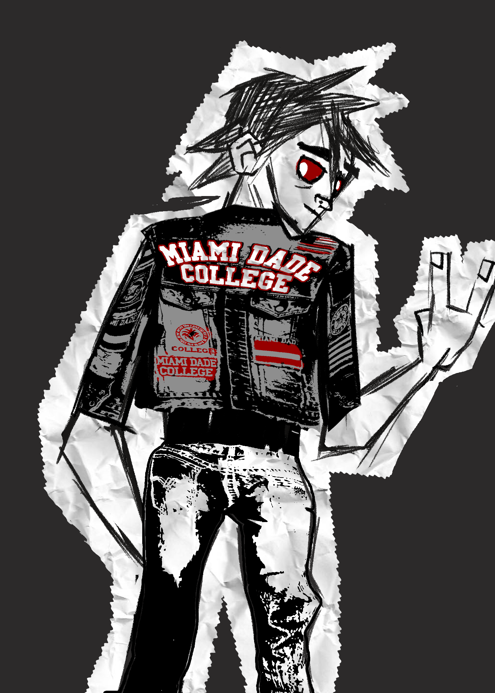
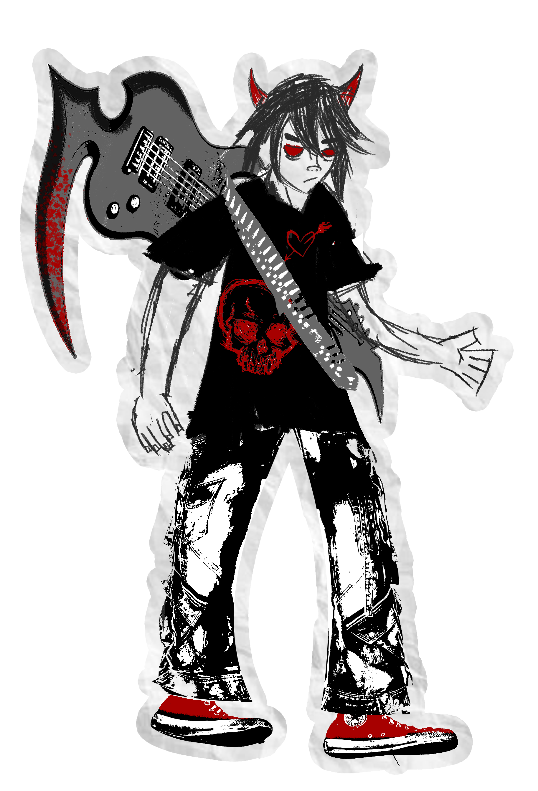
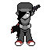
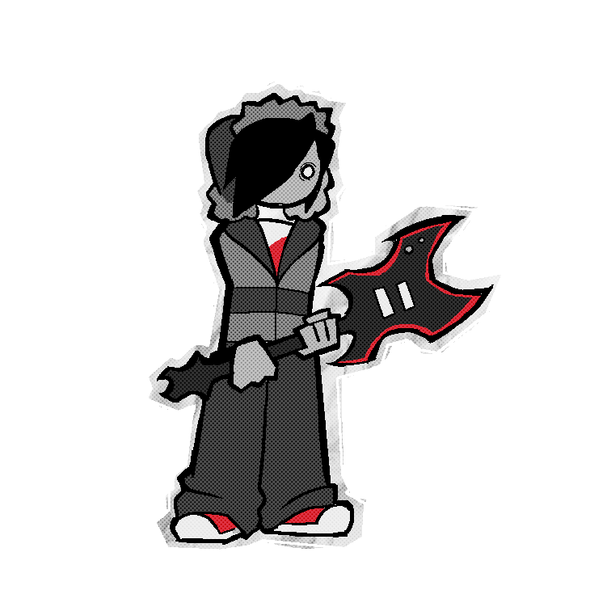
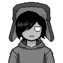
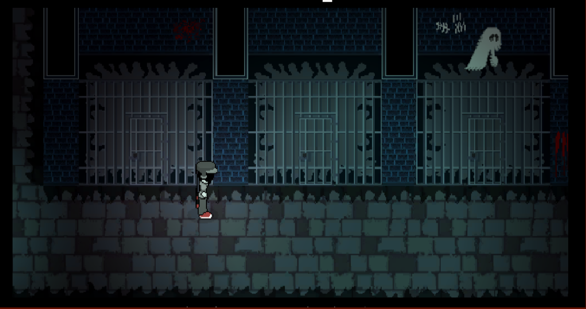
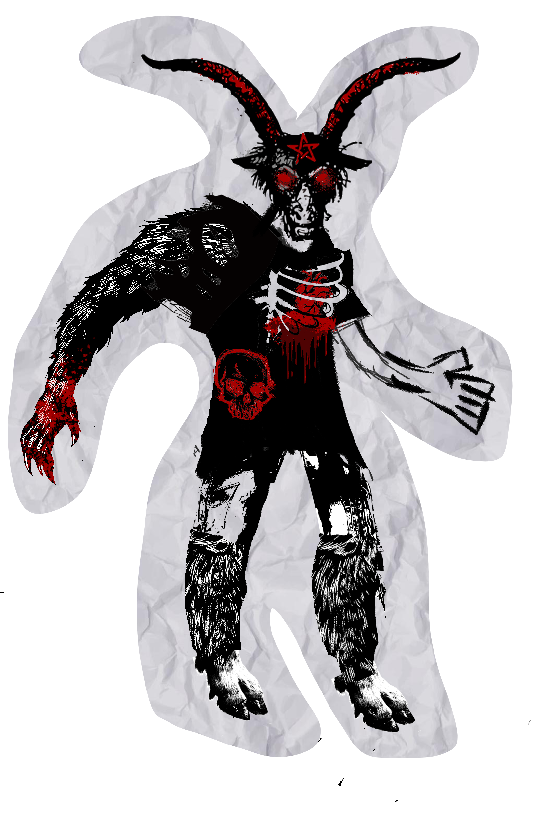
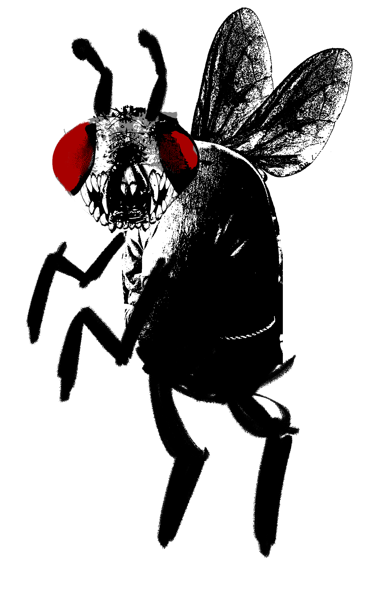

Game • Unity • Horror / Rhythm
A horror and rhythm pixel-art game where music is your weapon and grief is the monster. I was the code lead.
Fallen Fate is a dark, pixel-art Horro & Rhythm where a letter from a lost girlfriend lures Dante to a haunted Alcatraz Island, where he'll play their song one last time despite the monsters haunting him.
As code lead I owned the gameplay architecture: the rhythm-synced combat system, enemy behaviors, level scripting, and the tooling the rest of the team used to hook art and audio into the game.
Design overview: gameplay, systems, and how the beat drives everything
The main character went through several passes before landing on the final in-game sprite and talking portrait.





Every room is hand-placed pixel art with lighting and camera scripting to keep the horror close.


Enemies that didn't make the final cut. Still some of my favorite designs from the team.

